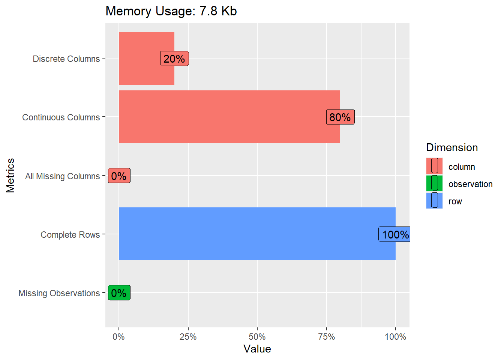
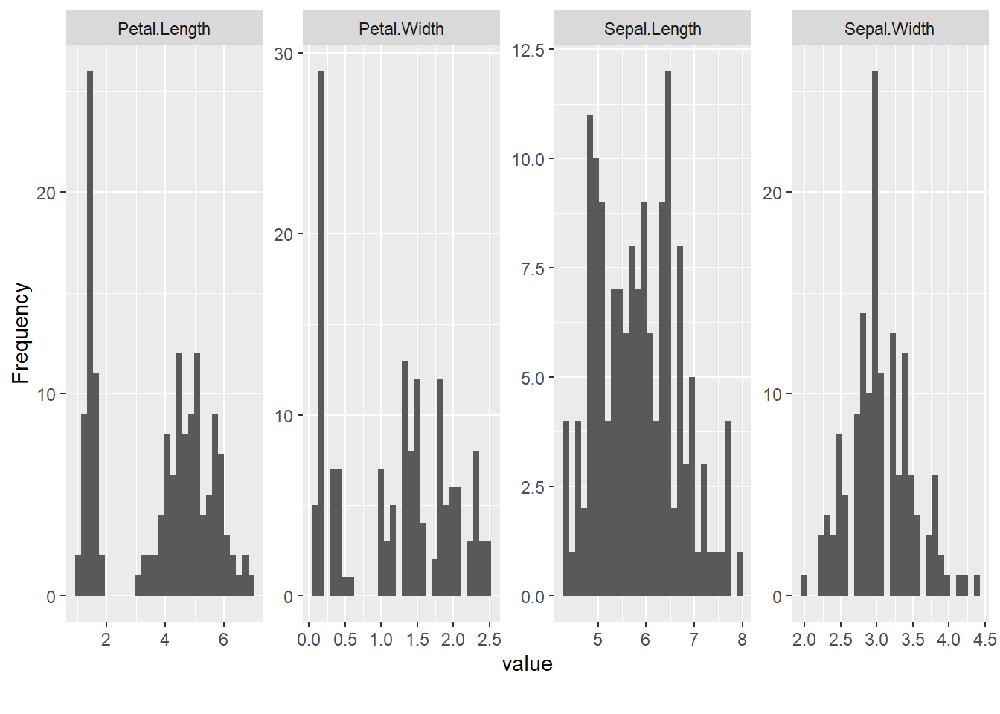
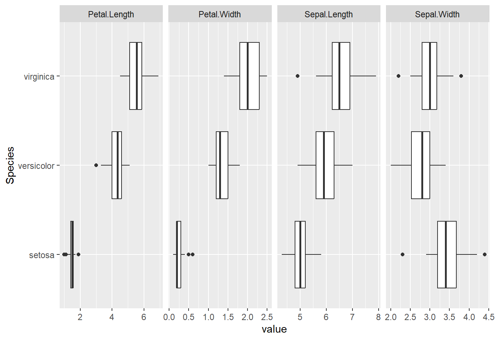
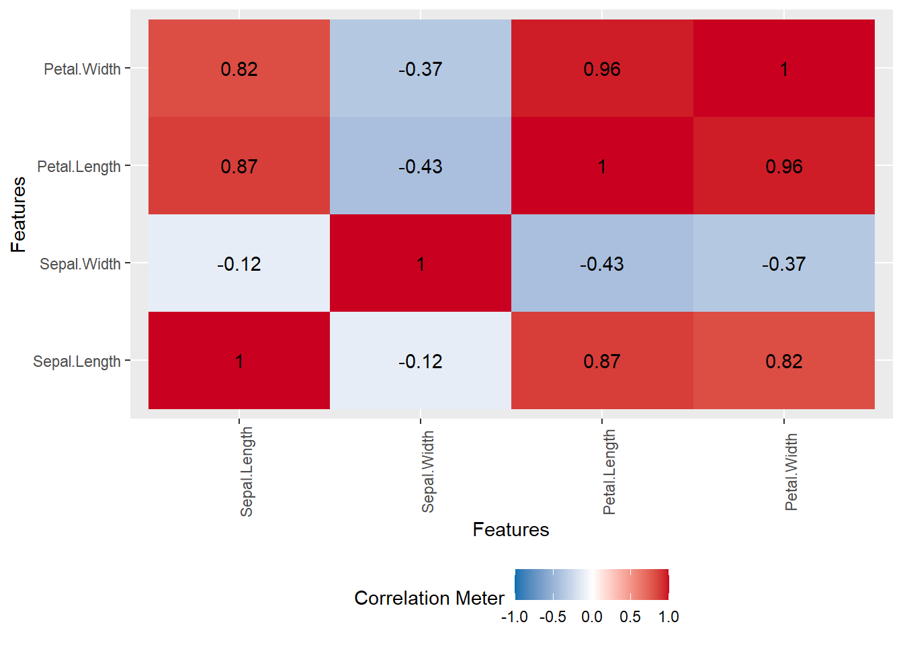
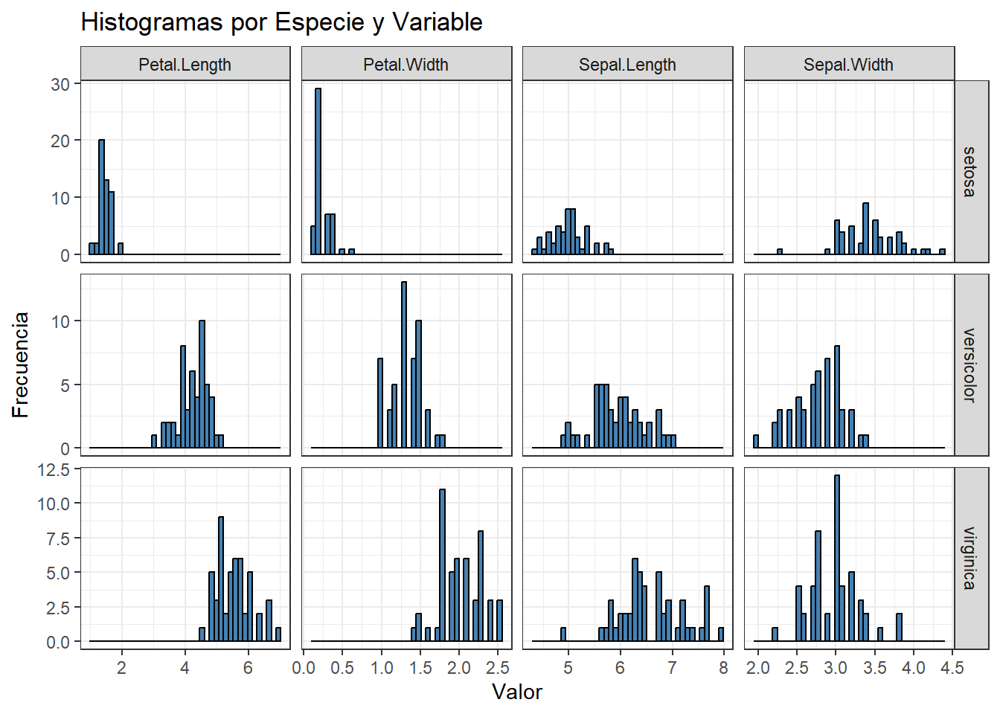

# Instalación y carga de paquetes necesarios
## Para manipulación de datos
if (!require(tidyverse)) install.packages("tidyverse")
## Para estadísticas descriptivas
if (!require(psych)) install.packages("psych")
## Para visualización de correlaciones
if (!require(corrplot)) install.packages("corrplot")
## Para gráficos avanzados
if (!require(ggplot2)) install.packages("ggplot2")
## Para exploración automática
if (!require(DataExplorer)) install.packages("DataExplorer") 19 Estimación de parámetros de estadística descriptiva en R
La estadística descriptiva es una rama fundamental de la estadística que se dedica a resumir y presentar datos de manera informativa. A través de medidas como la media, la mediana y la moda, es posible obtener una comprensión inicial de las características principales de un conjunto de datos (Navarro, 2019). En esta sección, se ilustrará cómo calcular y presentar estos estadísticos descriptivos utilizando el lenguaje de programación R y el paquete tidyverse, que facilita la manipulación y visualización de datos (Wickham, 2019).
19.1 Base de datos
El conjunto de datos IRIS es uno de los conjuntos de datos más utilizados en la literatura de estadística y aprendizaje automático. Fue introducido por Ronald Fisher en 1936 y contiene mediciones de cuatro características morfológicas de flores de tres especies distintas de iris: Iris setosa, Iris versicolor e Iris virginica. Este dataset es ampliamente empleado para ilustrar técnicas de análisis estadístico y clasificación supervisada (Fisher, 1936).
Referencia del dataset: Fisher, R. (1936). Iris [Dataset]. UCI Machine Learning Repository. https://doi.org/10.24432/C56C76
Acceso a recursos: El script completo con los ejemplos desarrollados y la base de datos IRIS pueden descargarse en el siguiente repositorio: [ADJUNTAR ACA EL ENLACE AL REPOSITORIO]
19.2 Configuración del Entorno de Trabajo
Antes de comenzar cualquier análisis, es fundamental configurar adecuadamente el entorno de trabajo. Esto implica instalar y cargar los paquetes necesarios, así como explorar y comprender la estructura del conjunto de datos que se utilizará. En esta sección, se detallarán los pasos para configurar el entorno de trabajo y realizar una exploración inicial del conjunto de datos iris.
19.2.1 Instalación y carga de paquetes necesarios
R cuenta con una amplia variedad de paquetes que facilitan la realización de análisis estadísticos y visualizaciones de datos. Para este manual, se utilizarán los siguientes paquetes:
tidyverse: Proporciona un conjunto de paquetes para la manipulación, transformación y visualización de datos, incluyendo
dplyr,ggplot2,tidyr, entre otros (Wickham et al., 2019).psych: Ofrece funciones para el análisis psicométrico y estadístico, incluyendo descripciones detalladas de los datos (Revelle, 2023).
ggplot2: Facilita la creación de gráficos de alta calidad (Wickham, 2016).
DataExplorer: Proporciona herramientas para la exploración automática de datos (Cui, 2023).
El siguiente código instala y carga estos paquetes, verificando primero si ya están instalados para evitar reinstalaciones innecesarias:
19.2.2 Carga y exploración inicial del dataset
Una vez configurado el entorno de trabajo, es fundamental cargar y explorar el conjunto de datos que se utilizará. En este caso, se utilizará el conjunto de datos iris, que está incluido por defecto en R. Este conjunto de datos contiene información sobre las dimensiones de los sépalos y pétalos de tres especies de flores de iris (setosa, versicolor y virginica).
El siguiente código carga el conjunto de datos iris y muestra las primeras filas y la estructura de los datos:
# Cargar el dataset IRIS
data(iris)
# Visualizar las primeras filas
head(iris) Sepal.Length Sepal.Width Petal.Length Petal.Width Species
1 5.1 3.5 1.4 0.2 setosa
2 4.9 3.0 1.4 0.2 setosa
3 4.7 3.2 1.3 0.2 setosa
4 4.6 3.1 1.5 0.2 setosa
5 5.0 3.6 1.4 0.2 setosa
6 5.4 3.9 1.7 0.4 setosa# Explorar la estructura de los datos
str(iris)'data.frame': 150 obs. of 5 variables:
$ Sepal.Length: num 5.1 4.9 4.7 4.6 5 5.4 4.6 5 4.4 4.9 ...
$ Sepal.Width : num 3.5 3 3.2 3.1 3.6 3.9 3.4 3.4 2.9 3.1 ...
$ Petal.Length: num 1.4 1.4 1.3 1.5 1.4 1.7 1.4 1.5 1.4 1.5 ...
$ Petal.Width : num 0.2 0.2 0.2 0.2 0.2 0.4 0.3 0.2 0.2 0.1 ...
$ Species : Factor w/ 3 levels "setosa","versicolor",..: 1 1 1 1 1 1 1 1 1 1 ...head(iris)proporciona una vista rápida de las primeras filas del conjunto de datos, lo que ayuda a detectar valores atípicos evidentes y familiarizarse con las variables.str(iris)muestra la estructura del conjunto de datos, incluyendo el tipo de cada variable (numérico o factor) y los primeros valores de cada variable. Esto facilita la planificación del análisis y la identificación de posibles problemas con los datos.
Además de head() y str(), el paquete DataExplorer ofrece funciones para la exploración automática de datos, como plot_intro(), que genera un informe completo sobre las características del conjunto de datos.
# Exploración automática con DataExplorer
DataExplorer::plot_intro(iris)
La función plot_intro() genera un informe que incluye información sobre el número de variables, el número de observaciones, el porcentaje de valores faltantes y el tipo de cada variable. Esto permite obtener una visión general del conjunto de datos de manera rápida y eficiente.
En resumen, la configuración del entorno de trabajo y la exploración inicial del conjunto de datos son pasos fundamentales para garantizar la calidad y validez del análisis. La instalación y carga de los paquetes necesarios, así como la exploración de la estructura y características del conjunto de datos, permiten identificar posibles problemas y planificar el análisis de manera efectiva (Wickham & Grolemund, 2017).
19.3 Medidas de tendencia central
Las medidas de tendencia central son estadísticos que resumen el centro de un conjunto de datos. Las más comunes son la media, la mediana y la moda. Estas medidas proporcionan información valiosa sobre los valores típicos en una distribución y son fundamentales para comprender las características principales de los datos (Moore et al., 2017).
19.3.1 Media y mediana
La media es el promedio aritmético de los valores, mientras que la mediana es el valor que se encuentra en el centro de la distribución cuando los datos están ordenados. En R, se pueden calcular fácilmente con las funciones base mean() y median().
# Media aritmética de la longitud del sépalo
mean(iris$Sepal.Length)[1] 5.843333# Mediana de la longitud del sépalo
median(iris$Sepal.Length)[1] 5.8La media de la longitud del sépalo es 5.84 cm y la mediana es 5.80 cm. La cercanía entre la media y la mediana sugiere que la distribución de la variable Sepal.Length es relativamente simétrica, es decir, no presenta una asimetría significativa. En distribuciones simétricas, la media y la mediana tienden a ser iguales, mientras que en distribuciones asimétricas, la media se desplaza hacia la cola más larga (James et al., 2013).
19.3.2 Cálculo de la moda
La moda es el valor que aparece con mayor frecuencia en un conjunto de datos. A diferencia de la media y la mediana, R no tiene una función base para calcular la moda. Por lo tanto, se define una función personalizada para calcular la moda, que maneja adecuadamente los valores faltantes (NA) y permite identificar múltiples modas en caso de empate.
# Función para calcular la moda
moda <- function(x) {
# Eliminar valores NA
x <- na.omit(x)
# Verificar si el vector está vacío
if (length(x) == 0) return(NA_character_)
# Calcular la frecuencia de cada valor
tabla <- table(x)
# Identificar el/los valores con mayor frecuencia
max_frecuencia <- max(tabla)
modas <- names(tabla[tabla == max_frecuencia])
# Verificar si todos los valores son únicos (sin moda)
if (max_frecuencia == 1) return(NA_character_)
# Retornar la moda como un string separado por comas
return(paste(modas, collapse = ", "))
}Explicación de la función:
xes el vector de datos para el cual se calculará la moda.na.omit(x)elimina los valores faltantes del vector.table(x)calcula la frecuencia de cada valor en el vector.max(tabla)identifica la frecuencia máxima.names(tabla[tabla == max_frecuencia])extrae los valores que tienen la frecuencia máxima.paste(modas, collapse = ", ")retorna la moda como un string separado por comas en caso de múltiples modas.
Una vez definida la función moda(), se puede calcular la moda de la variable Sepal.Length:
# Calculo de la moda de la longitud del sépalo
moda (iris$Sepal.Length)[1] "5"La moda de la longitud del sépalo es “5”, lo que indica que este valor es el más frecuente en el conjunto de datos. La diferencia entre la moda (5.00) y la media (5.84) sugiere que la distribución de la variable Sepal.Length puede tener una ligera asimetría o presentar múltiples picos.
19.4 Medidas de dispersión (globales)
Las medidas de dispersión cuantifican la variabilidad de los datos, es decir, qué tan dispersos están los valores alrededor de la media. Las medidas de dispersión más comunes son la varianza, la desviación estándar, el rango y el rango intercuartílico (IQR).
# Varianza y desviación estándar
var(iris$Sepal.Length)[1] 0.6856935sd(iris$Sepal.Length)[1] 0.8280661# Rango y rango intercuartílico
range(iris$Sepal.Length)[1] 4.3 7.9IQR(iris$Sepal.Length)[1] 1.3Interpretación:
var()mide la dispersión cuadrática media respecto de la media. Un valor alto indica mayor variabilidad.sd()es la raíz cuadrada de la varianza y mantiene las unidades originales. Es una medida de dispersión más interpretable que la varianza.range()devuelve los valores mínimo y máximo del conjunto de datos. La diferencia entre el valor máximo y el valor mínimo indica la amplitud total de los datos.IQR()es el rango intercuartílico, que se calcula como la diferencia entre el tercer cuartil (Q3) y el primer cuartil (Q1). El IQR es una medida de dispersión robusta frente a valores atípicos, ya que no se ve afectado por los valores extremos.
En resumen, las medidas de tendencia central y dispersión proporcionan información valiosa sobre las características principales de un conjunto de datos. La media, la mediana y la moda resumen el centro de la distribución, mientras que la varianza, la desviación estándar, el rango y el IQR cuantifican la variabilidad de los datos. La combinación de estas medidas permite obtener una visión integral de los datos y comprender su distribución y dispersión (Moore et al., 2017).
19.5 Medidas de tendencia central por grupos
El análisis de medidas de tendencia central por grupos permite comparar las características de diferentes subconjuntos de datos. A continuación, se explorarán dos enfoques para calcular la media, la mediana y la moda por especie en el conjunto de datos iris: el enfoque base con la función aggregate() y el enfoque moderno con el paquete dplyr.
19.5.1 Enfoque base con aggregate()
La función aggregate() es una herramienta versátil en R para realizar cálculos por grupos. Permite dividir un marco de datos por una o más variables categóricas y aplicar una función a cada subconjunto. En este caso, se utilizará aggregate() para calcular la media y la mediana de las variables numéricas por especie.
# Media y mediana por especie usando aggregate()
aggregate(. ~ Species,
data = iris,
FUN = function(v) c(media = mean(v),
mediana = median(v))) Species Sepal.Length.media Sepal.Length.mediana Sepal.Width.media
1 setosa 5.006 5.000 3.428
2 versicolor 5.936 5.900 2.770
3 virginica 6.588 6.500 2.974
Sepal.Width.mediana Petal.Length.media Petal.Length.mediana Petal.Width.media
1 3.400 1.462 1.500 0.246
2 2.800 4.260 4.350 1.326
3 3.000 5.552 5.550 2.026
Petal.Width.mediana
1 0.200
2 1.300
3 2.000La función aggregate() divide el marco de datos iris por la variable categórica Species y aplica la función especificada a cada subconjunto (Venables & Ripley, 2002). En este caso, la función calcula la media y la mediana de cada variable numérica para cada especie. La salida muestra los valores de la media y la mediana para cada variable y especie.
19.5.2 Enfoque moderno con dplyr (media, mediana y moda)
Para facilitar la comparación de estadísticos descriptivos entre diferentes especies y variables, se propone generar una tabla resumen que incluya la media, la mediana y la moda para cada combinación de especie y variable. A continuación, se muestra el código para generar esta tabla utilizando el paquete dplyr.
# Crear tabla resumen
tabla_resumen <- iris %>%
# Convertir a formato largo para facilitar los cálculos
pivot_longer(
cols = -Species,
names_to = "Variable",
values_to = "Valor"
) %>%
group_by(Species, Variable) %>%
summarise(
Media = round(mean(Valor, na.rm = TRUE), 2),
Mediana = round(median(Valor, na.rm = TRUE), 2),
Moda = moda(Valor),
) %>%
arrange(Species, Variable)
# Imprimir la tabla resumen
tabla_resumen# A tibble: 12 × 5
# Groups: Species [3]
Species Variable Media Mediana Moda
<fct> <chr> <dbl> <dbl> <chr>
1 setosa Petal.Length 1.46 1.5 1.4, 1.5
2 setosa Petal.Width 0.25 0.2 0.2
3 setosa Sepal.Length 5.01 5 5, 5.1
4 setosa Sepal.Width 3.43 3.4 3.4
5 versicolor Petal.Length 4.26 4.35 4.5
6 versicolor Petal.Width 1.33 1.3 1.3
7 versicolor Sepal.Length 5.94 5.9 5.5, 5.6, 5.7
8 versicolor Sepal.Width 2.77 2.8 3
9 virginica Petal.Length 5.55 5.55 5.1
10 virginica Petal.Width 2.03 2 1.8
11 virginica Sepal.Length 6.59 6.5 6.3
12 virginica Sepal.Width 2.97 3 3 En este código:
La función
modacalcula la moda de un vector numérico, manejando adecuadamente valores faltantes y posibles empates.pivot_longer()transforma el conjunto de datos de formato ancho a largo, facilitando el cálculo de estadísticos por variable.group_by(Species, Variable)agrupa los datos por especie y por cada característica morfométrica.summarise()calcula la media (mean), la mediana (median) y la moda (moda) para cada grupo, redondeando los valores numéricos a dos decimales para mejorar la presentación..groups = "drop"elimina la estructura de agrupamiento tras el resumen, dejando la tabla lista para su visualización o exportación.arrange(Species, Variable)ordena la tabla para facilitar la comparación entre especies y variables.
La tabla resumen permite comparar de manera clara y directa los valores centrales de cada variable morfométrica entre las especies de iris. Por ejemplo, se observa que Iris virginica presenta, en promedio, sépalos más largos que las otras especies, mientras que Iris setosa tiene los sépalos más anchos. La cercanía entre la media y la mediana en la mayoría de los casos indica que las distribuciones de las variables son aproximadamente simétricas, es decir, no presentan una asimetría significativa. Cuando la moda coincide con la mediana y la media, se refuerza la idea de simetría y ausencia de sesgo. Por el contrario, diferencias notables entre estos estadísticos pueden sugerir la presencia de valores atípicos, discretización de los datos o una ligera asimetría en la distribución (Navarro, 2019).
En resumen, ambos enfoques permiten calcular medidas de tendencia central por grupos, pero el enfoque moderno con dplyr ofrece mayor flexibilidad y claridad en la presentación de los resultados. La tabla resumen generada con dplyr facilita la comparación entre especies y variables, y promueve la reproducibilidad y claridad en el análisis (Wickham et al., 2023).
19.6 Resumen estadístico completo
R proporciona diversas funciones para obtener resúmenes estadísticos de manera rápida y eficiente. Además de las funciones base, el paquete psych ofrece descripciones más detalladas y completas de los datos. A continuación, se explorarán ambas opciones para obtener una visión integral de las características del conjunto de datos iris.
19.6.1 Resumen estadístico con funciones base
La función summary() es una herramienta fundamental en R para obtener un panorama general de los datos. Proporciona información sobre los valores mínimos, máximos, cuartiles y la media de cada variable numérica, así como la frecuencia de cada categoría en las variables factor (o categóricas).
# Resumen estadístico con funciones base
summary(iris) Sepal.Length Sepal.Width Petal.Length Petal.Width
Min. :4.300 Min. :2.000 Min. :1.000 Min. :0.100
1st Qu.:5.100 1st Qu.:2.800 1st Qu.:1.600 1st Qu.:0.300
Median :5.800 Median :3.000 Median :4.350 Median :1.300
Mean :5.843 Mean :3.057 Mean :3.758 Mean :1.199
3rd Qu.:6.400 3rd Qu.:3.300 3rd Qu.:5.100 3rd Qu.:1.800
Max. :7.900 Max. :4.400 Max. :6.900 Max. :2.500
Species
setosa :50
versicolor:50
virginica :50
Interpretación:
Variables numéricas: Para cada variable numérica (Sepal.Length, Sepal.Width, Petal.Length, Petal.Width),
summary()muestra el valor mínimo (Min.), el primer cuartil (1st Qu.), la mediana (Median), la media (Mean), el tercer cuartil (3rd Qu.) y el valor máximo (Max.). Estos estadísticos permiten evaluar la distribución y dispersión de los datos.Variable categórica: Para la variable Species,
summary()muestra la frecuencia de cada especie (setosa, versicolor, virginica). Esto permite verificar si las clases están balanceadas o no.
Resumen estadístico detallado con el paquete psych
El paquete psych proporciona funciones para obtener descripciones más detalladas de los datos, incluyendo medidas de tendencia central, dispersión, forma de la distribución y error estándar. La función describe() es especialmente útil para obtener un resumen completo de las variables numéricas.
# Instalar y cargar el paquete psych si es necesario
if (!require(psych)) install.packages("psych")
# Resumen detallado con psych
describe(iris[, 1:4]) vars n mean sd median trimmed mad min max range skew
Sepal.Length 1 150 5.84 0.83 5.80 5.81 1.04 4.3 7.9 3.6 0.31
Sepal.Width 2 150 3.06 0.44 3.00 3.04 0.44 2.0 4.4 2.4 0.31
Petal.Length 3 150 3.76 1.77 4.35 3.76 1.85 1.0 6.9 5.9 -0.27
Petal.Width 4 150 1.20 0.76 1.30 1.18 1.04 0.1 2.5 2.4 -0.10
kurtosis se
Sepal.Length -0.61 0.07
Sepal.Width 0.14 0.04
Petal.Length -1.42 0.14
Petal.Width -1.36 0.06Interpretación:
vars: Número de variable.
n: Número de observaciones.
mean: Media.
sd: Desviación estándar.
median: Mediana.
trimmed: Media truncada (5% por defecto).
mad: Desviación absoluta mediana.
min: Valor mínimo.
max: Valor máximo.
range: Rango (max - min).
skew: Asimetría.
kurtosis: Curtosis.
se: Error estándar de la media.
La función describe() proporciona información adicional sobre la forma de la distribución de los datos. La asimetría (skew) mide la falta de simetría de la distribución, mientras que la curtosis (kurtosis) mide la concentración de los datos alrededor de la media. Estos estadísticos son útiles para identificar posibles valores atípicos y evaluar la normalidad de los datos.
En resumen, summary() ofrece un panorama rápido de los estadísticos básicos, mientras que describe() (del paquete psych) añade información sobre la asimetría, curtosis y error estándar, profundizando el diagnóstico de los datos (Revelle, 2023). La combinación de ambas funciones permite obtener una visión completa y detallada de las características del conjunto de datos.
19.7 Visualizaciones básicas con DataExplorer y ggplot2
El paquete DataExplorer permite generar visualizaciones exploratorias de manera eficiente y automática, facilitando la interpretación de los datos. Este paquete proporciona funciones para obtener una visión general de las variables, sus distribuciones y las relaciones entre ellas, optimizando el análisis exploratorio inicial (Cui, 2023).
19.7.1 Histogramas de variables numéricas
La función plot_histogram() genera histogramas para cada variable numérica del conjunto de datos, lo que permite visualizar la distribución de los datos y detectar posibles asimetrías o valores atípicos.
# Histogramas de variables numéricas
plot_histogram(iris)
Interpretación: Los histogramas permiten visualizar la distribución de cada variable numérica y detectar posibles asimetrías o valores atípicos. Por ejemplo, se puede observar si la distribución es simétrica, asimétrica a la derecha (positiva) o asimétrica a la izquierda (negativa).
19.7.2 Diagramas de caja por especie
La función plot_boxplot() genera diagramas de caja para cada variable numérica, agrupados por la variable categórica Species. Esto permite comparar la distribución de cada variable entre las diferentes especies.
# Diagramas de caja por especie
plot_boxplot(iris, by = "Species")
Interpretación: Los diagramas de caja permiten comparar la distribución de cada variable entre las diferentes especies. Se puede observar la mediana, los cuartiles, los valores atípicos y la dispersión de los datos para cada especie.
19.7.3 Mapa de calor de correlaciones
La función plot_correlation() genera un mapa de calor de las correlaciones entre las variables numéricas del conjunto de datos. Esto permite visualizar las correlaciones de manera gráfica y detectar las relaciones más fuertes entre las variables.
# Mapa de calor de correlaciones
plot_correlation(iris[, 1:4])
Interpretación: El mapa de calor de correlaciones permite visualizar las correlaciones entre las variables numéricas de manera gráfica. Los colores más intensos indican correlaciones más fuertes, mientras que los colores más claros indican correlaciones más débiles.
19.7.4 Visualización de histogramas por especie y variable
Para visualizar la distribución de cada variable dentro de cada especie, se propone generar histogramas individuales para cada combinación de especie y variable. A continuación, se muestra el código para generar estos histogramas utilizando el paquete ggplot2:
library(ggplot2)
# Convertir los datos a formato largo
iris_long <- iris %>%
tidyr::pivot_longer(
cols = starts_with("Sepal") | starts_with("Petal"),
names_to = "Variable",
values_to = "Value"
)
# Generar histogramas para cada especie y variable
ggplot(iris_long, aes(x = Value)) +
geom_histogram(bins = 40, fill = "steelblue", color = "black") +
facet_grid(Species ~ Variable, scales = "free") +
labs(
title = "Histogramas por Especie y Variable",
x = "Valor",
y = "Frecuencia"
) +
theme_bw()
En este código:
library(ggplot2)carga el paqueteggplot2, que permite crear gráficos de alta calidad.iris %>% tidyr::pivot_longer(...)transforma los datos de formato ancho a formato largo, facilitando la generación de gráficos.ggplot(iris_long, aes(x = Value))crea un objeto gráfico base, especificando que se utilizará la variable “Value” en el eje x.geom_histogram(bins = 40, fill = "steelblue", color = "black")agrega un histograma al gráfico, especificando el número de bins, el color de relleno y el color del borde.facet_grid(Species ~ Variable, scales = "free")genera un panel de gráficos, mostrando un histograma para cada combinación de especie y variable. El argumentoscales = "free"permite que cada histograma tenga su propia escala en el eje x.labs(...)agrega etiquetas al gráfico, incluyendo el título, la etiqueta del eje x y la etiqueta del eje y.theme_bw()aplica un tema visual en blanco y negro al gráfico.
Interpretación: Los histogramas permiten visualizar la distribución de cada variable dentro de cada especie. Se puede observar la forma de la distribución, la presencia de valores atípicos y la dispersión de los datos para cada combinación de especie y variable. El argumento scales = "free" permite que cada histograma tenga su propia escala en el eje x, lo que facilita la comparación entre las diferentes combinaciones de especie y variable.
En resumen, la combinación de las funciones del paquete DataExplorer y la visualización de histogramas con ggplot2 permite obtener una visión completa y detallada de las características del conjunto de datos, facilitando la interpretación de los datos y la identificación de posibles patrones o relaciones (Wickham, 2016).